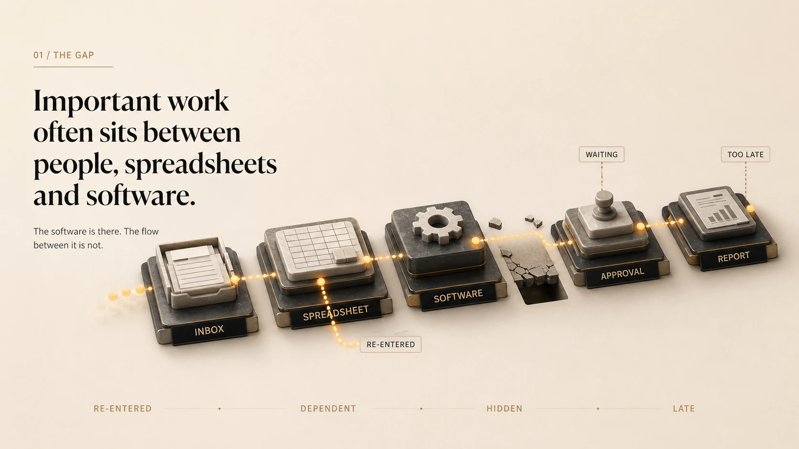
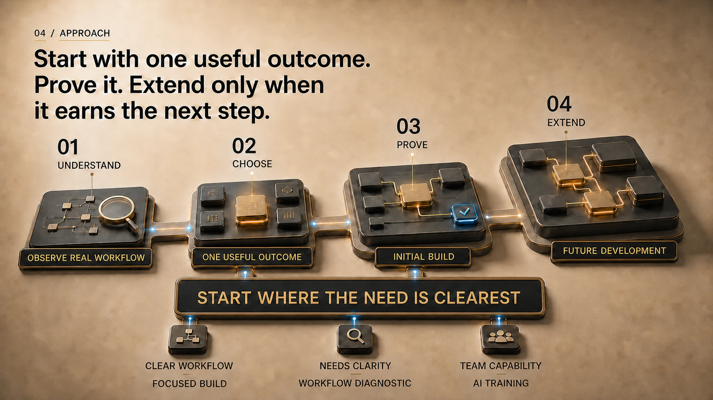

Frontline capture
Synthetic demonstration
Make the correct weekly record the easiest one to create.
Mobile-first weekly site records, invoices and admin-ready exports.
Proof Systems
Helping owner-led businesses replace fragile spreadsheets, disconnected tools and repetitive work with practical software, controlled AI automation and training their teams can use.
Operator-led. Built around the real workflow. Technology used where it earns its place.
Keep the useful tools. Add a bespoke layer that connects accounts or ERP software, spreadsheets and operational workflows.
Proof Systems builds around what already works.

01 / THE GAP
The software is there. The flow between it is not.

01B / FIT
Use established software where it fits. Add a focused bespoke layer where it does not.
Unused features
Process bends
Only the missing layer
Bespoke fixes the manual work that off-the-shelf software leaves behind.
02 / CAPABILITY
People, spreadsheets and offline documents hold different parts of the process.
A fitted operational system connects the work, people and controls.
The working process creates a connected, usable flow of structured data.
Automation comes after the workflow works. Repetitive tasks can then be automated safely.
Role-specific training helps people apply AI safely and usefully to the work they already do.
03 / PROOF
Frontline capture
Synthetic demonstration
Mobile-first weekly site records, invoices and admin-ready exports.
Project control
Synthetic demonstration
Weekly labour allocation, budget control and coded payment exports.
Finance and reporting
Synthetic demonstration
Checked accounts extraction into cashflow and management accounts. Deterministic local processing; no AI touches company accounting data.
04 / APPROACH
Focused build
Workflow diagnostic
AI training
Ask about team training
05 / OPERATOR FIRST
I’m Mat Glendenning. My experience combines operational leadership, systems design and hands-on delivery. Across sixteen years inside an operating construction business, including time as its managing director, I built and improved the systems used by finance, commercial and operational teams.
Proof Systems applies that operator’s view to owner-led SMEs. I begin with the work, the people responsible for it and the evidence they need. Software and AI are useful when they make that operation more reliable, visible or easier to run.
06 / START
Tell me about one recurring workflow. Keep the first description general and do not send confidential documents or sensitive personal information. I will review it personally and suggest a sensible next conversation.